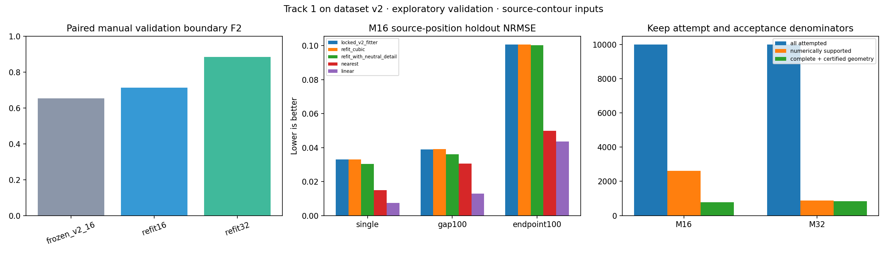

Open development release. Track 2 remains on hold. Numerical readiness and independent scientific acceptance are separate.
79,270 eligible observations from 28,591 uncompressed native RGB frames. CPU float64 refits compare 16 controls/35 channels with bounded compound 32 controls/67 channels; four Legendre coefficients, one-second histories and quarter-second hops remain fixed. Frozen MobileNetV3-Small features are rebuilt for every eligible observation; separate source-masked object/context PCA projections use 128 dimensions and training participants only.

| method | masks | iou | boundary_fscore_2px |
|---|---|---|---|
| frozen_v2_16 | 149 | 0.891745 | 0.652229 |
| refit16 | 149 | 0.901469 | 0.712380 |
| refit32 | 149 | 0.973186 | 0.884204 |
The encoder receives the source contour. These are paired manual masks within the new partition, not the old full validation cohort or unseen RGB segmentation. The covariance and motion targets remain source-annotation measurements.
| model | protocol | method | probes | position_nrmse | mask_iou |
|---|---|---|---|---|---|
| 16 | single | linear | 320 | 0.007412 | 0.898979 |
| 16 | single | locked_v2_fitter | 320 | 0.033063 | 0.796669 |
| 16 | single | nearest | 320 | 0.014944 | 0.870394 |
| 16 | single | refit_cubic | 320 | 0.033083 | 0.797422 |
| 16 | single | refit_with_neutral_detail | 320 | 0.030410 | 0.802736 |
| 16 | gap100 | linear | 313 | 0.012942 | 0.879928 |
| 16 | gap100 | locked_v2_fitter | 313 | 0.039008 | 0.785561 |
| 16 | gap100 | nearest | 313 | 0.030512 | 0.823133 |
| 16 | gap100 | refit_cubic | 313 | 0.039075 | 0.786273 |
| 16 | gap100 | refit_with_neutral_detail | 313 | 0.036015 | 0.791327 |
| 16 | endpoint100 | linear | 226 | 0.043649 | 0.748707 |
| 16 | endpoint100 | locked_v2_fitter | 226 | 0.100615 | 0.635044 |
| 16 | endpoint100 | nearest | 226 | 0.049865 | 0.771160 |
| 16 | endpoint100 | refit_cubic | 226 | 0.100621 | 0.634752 |
| 16 | endpoint100 | refit_with_neutral_detail | 226 | 0.100343 | 0.635281 |
| 32 | single | linear | 127 | 0.005230 | 0.953132 |
| 32 | single | locked_v2_fitter | 127 | 0.023135 | 0.867034 |
| 32 | single | nearest | 127 | 0.012189 | 0.916098 |
| 32 | single | refit_cubic | 127 | 0.023135 | 0.866906 |
| 32 | single | refit_with_neutral_detail | 127 | 0.021661 | 0.872917 |
| 32 | gap100 | linear | 128 | 0.009839 | 0.938836 |
| 32 | gap100 | locked_v2_fitter | 128 | 0.028703 | 0.852773 |
| 32 | gap100 | nearest | 128 | 0.025902 | 0.871389 |
| 32 | gap100 | refit_cubic | 128 | 0.028703 | 0.852795 |
| 32 | gap100 | refit_with_neutral_detail | 128 | 0.026946 | 0.858013 |
| 32 | endpoint100 | linear | 97 | 0.032157 | 0.827139 |
| 32 | endpoint100 | locked_v2_fitter | 97 | 0.082262 | 0.712227 |
| 32 | endpoint100 | nearest | 97 | 0.035794 | 0.828833 |
| 32 | endpoint100 | refit_cubic | 97 | 0.082262 | 0.712263 |
| 32 | endpoint100 | refit_with_neutral_detail | 97 | 0.082126 | 0.712983 |
Each model compares methods on identical retained observations within its supported cohort; M16 and M32 cohorts can differ. Shape holdout inputs are re-encoded after removing targets. Parameter choices use the five training participants only; the two repeatedly used validation participants remain exploratory. Interpolation keeps all retained knots and can outperform compact cubic compression. These tests do not establish online forecasting accuracy.
| model | family | regularization | loss | detail_count |
|---|---|---|---|---|
| 16 | position | 0.333333 | huber | 3 |
| 16 | scale | 0.333333 | l2 | 3 |
| 16 | shape | 0.333333 | huber | 3 |
| 32 | position | 0.333333 | l2 | 3 |
| 32 | scale | 0.333333 | huber | 3 |
| 32 | shape | 0.333333 | huber | 3 |
Shape settings minimize training-mask reconstruction error. Position/scale settings have per-training-video/protocol safeguards. These objective refinements followed exploratory validation diagnostics; this is not an untouched final evaluation. Selection evidence.
| video_id | model | attempted | valid | certified_geometry | complete_certified_geometry | kinematic_supported |
|---|---|---|---|---|---|---|
| P11_16 | 16 | 868 | 210 | 178 | 51 | 276 |
| P03_112 | 32 | 1575 | 138 | 138 | 138 | 503 |
| P02_122 | 32 | 1526 | 148 | 138 | 138 | 552 |
| P04_109 | 32 | 2373 | 202 | 202 | 202 | 749 |
| P11_16 | 32 | 868 | 57 | 52 | 52 | 276 |
| P03_112 | 16 | 1575 | 382 | 315 | 120 | 503 |
| P02_122 | 16 | 1526 | 469 | 391 | 131 | 552 |
| P08_09 | 32 | 1008 | 79 | 75 | 75 | 338 |
| P22_117 | 32 | 1697 | 141 | 136 | 136 | 632 |
| P08_09 | 16 | 1008 | 241 | 196 | 69 | 338 |
| P04_109 | 16 | 2373 | 570 | 500 | 183 | 749 |
| P18_03 | 16 | 940 | 242 | 221 | 102 | 292 |
| P18_03 | 32 | 940 | 112 | 106 | 106 | 292 |
| P22_117 | 16 | 1697 | 494 | 423 | 128 | 632 |
Functional derivatives describe fitted history. Local constant velocity comes from a separate recent-observation estimator. Its covariance is conditional and uncalibrated. Optional endpoint-neutral detail affects positions inside history only and has zero endpoint position/velocity contribution. Geometry rollback affects a separate certified geometry view; its covariance is unavailable. Full masks are source-complete only when every retained source ring is represented.
| index | sequences |
|---|---|
| train/length16 | 0 |
| train/length4 | 396 |
| validation/length16 | 0 |
| validation/length4 | 63 |
Sequences never cross missing hops or recorded source/correspondence epochs. Two-second clips limit longer sequences; zero-length sixteen-state indices remain empty instead of being fabricated. Provisional annotation-chain identity is not independently certified. Every paired source observation has a selection ledger.
| split | model | source_position_marginal95_coverage |
|---|---|---|
| train | 16 | 0.955784 |
| train | 32 | 0.955891 |
| validation | 16 | 0.939300 |
| validation | 32 | 0.936506 |
Coverage is approximate source-position marginal coverage. It does not calibrate human label uncertainty, physical velocity, joint state consistency or detail/guarded geometry. Dense masks may depend on future annotated endpoints; no verified causal RGB measurement pipeline is claimed. Independent contact/identity/velocity references and fresh locked participants remain missing. No public VISOR benchmark parity or scientific freeze is claimed.
Train-only search · Spatial build · Full appearance/PCA · Functional build · Matched evaluation · Numerical checks and sequence counts · Artifact/source manifest